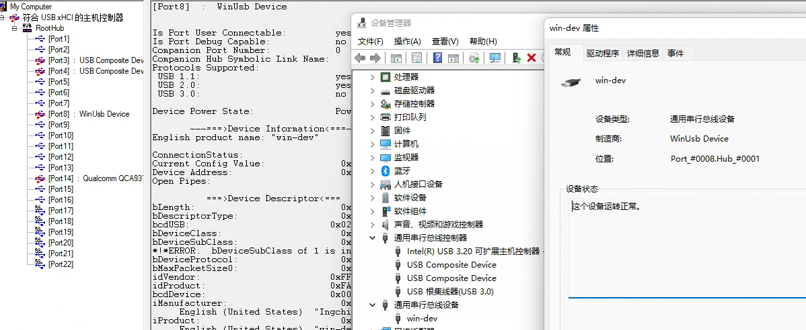
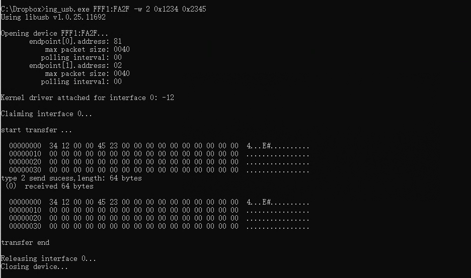

22 Universal serial bus device (USB)
22.1 功能概述
- 支持full-speed (12 Mbps) device模式
- 集成PHY Transceiver，内置上拉，软件可控
- Endpoints:
- Endpoints 0: control endpoint
- Endpoints 1-5: 可以配置为in/out，以及control/isochronous/bulk/interrupt
- 支持USB suspend, resume, remote-wakeup
- 内置DMA方便数据传输
22.2 使用说明
22.2.1 USB软件结构
- driver layer，USB的底层处理，不建议用户修改。
- 处理了大部分和应用场景无关的流程，提供了USB_IrqHandler，调用event handler。
- 位置：
\ING\_SDK\sdk\src\FWlib\peripheral\_usb.c
- bsp layer，处理场景相关的流程，需要用户提供event handler，并实现control和transfer相关处理。
- 位置：
\ING\_SDK\sdk\src\BSP\bsp\_usb_xxx.c
- 位置：
22.2.2 USB Device 状态
- USB的使用首先需要配置USB CLK，USB IO以及PHY，并且初始化USB模块，此时USB为”NONE”状态，等待USB的reset中断（USB_IrqHandler）。
- reset中断的触发代表USB cable已经连接，而且host已经检测到了device，在reset中断中，USB模块完成相关的USB初始化。并继续等待中断。
- enumeration中断的触发代表device可以开始接收SOF以及control传输，device需要配置并打开endpoint 0，进入”DEFAULT”状态。
- out中断的触发代表收到了host的get descriptor，用户需要准备好相应的descriptor，并配置相关的in endpoint。
- out中断中的set address request会将device的状态切换为”ADDRESS”。
- out中断中的set configuration会将device的状态切换为”CONFIGURED”。此时device可以开始在配置的endpoint上传输数据。
- bus上的idle会自动触发suspend中断（用户需要在初始化中使能suspend中断），此时切换为”SUSPEND”状态。
- idle之后任何bus上的活动将会触发resume中断（用户需要在初始化中使能resume中断）,用户也可以选择使用remote wakeup主动唤醒。
- 唤醒之后的usb将重新进入”CONFIGURED”状态，每1m（full-speed）将会收到1个SOF中断（用户需要在初始化中使能sof中断）。
typedef enum
{
USB_DEVICE_NONE,
/* A USB device may be attached or detached from the USB */
USB_DEVICE_ATTACHED,
/*USB devices may obtain power from an external source */
USB_DEVICE_POWERED,
/* After the device has been powered, and reset is done */
USB_DEVICE_DEFAULT,
/* All USB devices use the default address when initially powered or after the device has been reset. Each
USB device is assigned a unique address by the host after attachment or after reset. */
USB_DEVICE_ADDRESS,
/* Before a USB device function may be used, the device must be configured. */
USB_DEVICE_CONFIGURED,
/* In order to conserve power, USB devices automatically enter the Suspended state when the device has
observed no bus traffic for a specified period */
USB_DEVICE_SUSPENDED,
USB_DEVICE_TEST_RESET_DONE
}USB_DEVICE_STATE_E;22.2.3 设置 IO
对于Ing91682,USB的DP/DM固定在GPIO16/17,IO初始化细节请参考ING_SDK\sdk\src\BSP\bsp\_usb.c中的bsp_usb_init()
// ATTENTION ! FIXED IO FOR USB on 916 series
#define USB_PIN_DP GIO_GPIO_16
#define USB_PIN_DM GIO_GPIO_1722.2.4 设置 PHY
使用SYSCTRL_USBPhyConfig()初始化PHY, 细节请参考ING_SDK\sdk\src\BSP\bsp\_usb.c中的bsp_usb_init()
/**
* @brief Config USB PHY functionality
*
* @param[in] enable Enable(1)/Disable(0) usb phy module
* @param[in] pull_sel DP pull up(0x1)/DM pull up(0x2)/DP&DM pull down(0x3)
*/
void SYSCTRL_USBPhyConfig(uint8_t enable, uint8_t pull_sel);22.2.5 USB 模块初始化
细节请参考ING_SDK\sdk\src\BSP\bsp\_usb.c中的bsp_usb_init()。
- USB模块首选需要打开USB中断并配置相应接口，其中USB_IrqHandler由driver提供不需要用户修改。
platform_set_irq_callback(PLATFORM_CB_IRQ_USB, USB_IrqHandler, NULL);- 其次需要初始化USB模块以及相关状态信息，入参结构体中用户需要提供event handler，其余为可选项
/**
* @brief interface API. initilize usb module and related variables, must be called before any usb usage
*
* @param[in] device callback function with structure USB_INIT_CONFIG_T.
* When this function has been called your device is ready to be enumerated by the USB host.
* @param[out] null.
*/
extern USB_ERROR_TYPE_E USB_InitConfig(USB_INIT_CONFIG_T *config);22.2.6 event handler
USB的用户层调用通过event handler来实现， 细节请参考ING_SDK\sdk\src\BSP\bsp\_usb.c中的bsp_usb_event_handler()。
event handler需要包含对以下event事件的处理：
USB_EVENT_EP0_SETUP
- 该event包含EPO(control endpoint)上的所有request，包括读取/设置 descriptor，设置address，set/clear feature等request，按照USB协议，device需要支持所有协议中的标准request。
- descriptor需要按照协议格式准备，并且放置在4bytes对齐的全局地址，并通过USB_SendData()发送给host，在整个过程中，该全局地址和数据需要保持。（4bytes对齐是内部DMA搬运的要求，否则可能出现错误）。
- 对于没有data stage的request，event handler中不需要使用USB_SendData()/USB_RecvData()’。
- 对于不支持的request，需要设置status为：
status = USB_ERROR_REQUEST_NOT_SUPPORT;- 根据返回的status，driver判断当前request是否支持，否则按照协议发送stall给host。
- 对于包含data stage的out传输，driver将继续接收数据，数据将在USB_EVENT_EP_DATA_TRANSFER的ep0通知用户。
- setup/data/status stage的切换将在driver内进行。
USB_EVENT_EP_DATA_TRANSFER
数据相关的处理，接收和发射数据。
- 参数包含ep number
uint8_t ep;以及数据处理类型，分别代表发送和接收transfer的结束。
typedef enum { /// Event send when a receive transfert is finish USB_CALLBACK_TYPE_RECEIVE_END, /// Event send when a transmit transfert is finish USB_CALLBACK_TYPE_TRANSMIT_END } USB_CALLBACK_EP_TYPE_T;USB_EVENT_DEVICE_RESET
USB reset 中断的event，代表枚举的开始。
USB_EVENT_DEVICE_SOF
SOF中断，每1m（full-speed）将会收到1个SOF中断（用户需要在初始化中使能sof中断）。
USB_EVENT_DEVICE_SUSPEND
bus 进入idle状态后触发suspend，此时总线上没有USB活动。driver会关闭phy clock。
USB_EVENT_DEVICE_RESUME
bus 上的任何USB活动将会触发wakeup中断。resume后driver打开phy clock，USB恢复到正常状态。
22.2.6.1 USB_EVENT_EP0_SETUP的实现
control以及枚举相关的流程实现需要通过USB_EVENT_EP0_SETUP event来进行。
默认的control endpoint是ep0, 所有request都会触发该event
如果场景不支持某个request，则需要设置status == USB_ERROR_REQUEST_NOT_SUPPORT。driver会据此发送stall。
如果场景需要处理某个request，则需要将status设置为非USB_ERROR_REQUEST_NOT_SUPPORT状态。
用户需要将所有descriptor保存在4bytes对齐的全局地址。以device descriptor为例
case USB_REQUEST_DEVICE_DESCRIPTOR_DEVICE: { size = sizeof(USB_DEVICE_DESCRIPTOR_REAL_T); size = (setup->wLength < size) ? (setup->wLength) : size; status |= USB_SendData(0, (void*)&DeviceDescriptor, size, 0); } break;首先判断size，确保数据没有超出request要求，然后使用USB_SendData发送in transfer数据。其中DeviceDescriptor为device descriptor地址。
set address request需要配置device地址，因此在driver layer实现。
22.2.6.2 SUSPEND 的处理
SUSPEND状态下可以根据需求进行power saving，默认配置只关闭了phy clock，其余的USB power/clock处理需要根据场景在应用层中的low power mode中来实现。
22.2.6.3 remote wakeup
进入suspend的device可以选择主动唤醒，唤醒通过bsp_usb_device_remote_wakeup()连续发送10ms的resume signal来实现。
void bsp_usb_device_remote_wakeup(void)
{
USB_DeviceSetRemoteWakeupBit(U_TRUE);
platform_set_timer(internal_bsp_usb_device_remote_wakeup_stop,16);// setup timer for 10ms, then disable resume signal
}22.2.7 常用driver API
22.2.7.1 send usb data
使用该API发送USB数据（包括setup data和应用数据），但需要在set config（打开endpoint）之后使用。
/**
* @brief interface API. send usb device data packet.
*
* @param[in] ep, endpoint number, the highest bit represent direction, use USB_EP_DIRECTION_IN/OUT
* @param[in] buffer, global buffer to hold data of the packet, it must be a DWORD-aligned address.
* @param[in] size. it should be a value smaller than 512*mps(eg, for EP0, mps is 64byte, maximum packet number is 512, MPS is 64).
* @param[in] flag. null
* @param[out] return U_TRUE if successful, otherwise U_FALSE.
*/
extern USB_ERROR_TYPE_E USB_SendData(uint8_t ep, void* buffer, uint16_t size, uint32_t flag);22.2.7.2 receive usb data
使用该API接收USB数据（包括setup data和应用数据），但需要在set config（打开endpoint）之后使用。
/**
* @brief interface API. receive usb device data packet.
*
* @param[in] ep, endpoint number, the highest bit represent direction, use USB_EP_DIRECTION_IN/OUT
* @param[in] buffer, global buffer to hold data of the packet, it must be a DWORD-aligned address.
* @param[in] size. For OUT transfers, the Transfer Size field in the endpoint Transfer Size register must be a multiple
* of the maximum packet size of the endpoint(eg, EP0 is 64byte), adjusted to the DWORD boundary
* @param[in] flag. null
* @param[out] return U_TRUE if successful, otherwise U_FALSE.
*/
extern USB_ERROR_TYPE_E USB_RecvData(uint8_t ep, void* buffer, uint16_t size, uint32_t flag);22.2.7.3 enable/disable ep
正常处理中不需要使用该API，特殊情况下可以根据需求打开关闭某个特定的endpoint
/**
* @brief interface APIs. use this pair for enable/disable certain ep.
*
* @param[in] ep number with USB_EP_DIRECTION_IN/OUT.
* @param[out] null
*/
extern void USB_EnableEp(uint8_t ep, USB_EP_TYPE_T type);
extern void USB_DisableEp(uint8_t ep);22.2.7.4 usb close
USB的disable请使用bsp layer中的bsp_usb_disable()
/**
* @brief interface API. shutdown usb module and reset all status data.
*
* @param[in] null.
* @param[out] null.
*/
extern void USB_Close(void);22.2.7.5 usb stall
/**
* @brief interface API. set ep stall pid for current transfer
*
* @param[in] ep num with direction.
* @param[in] U_TRUE: stall, U_FALSE: set back to normal
* @param[out] null.
*/
extern void USB_SetStallEp(uint8_t ep, uint8_t stall);22.2.7.6 usb In endpoint NAK
/**
* @brief interface API. use this api to set NAK on a specific IN ep
*
* @param[in] U_TRUE: enable NAK on required IN ep. U_FALSE: stop NAK
* @param[in] ep: ep number with USB_EP_DIRECTION_IN/OUT.
* @param[out] null.
*/
extern void USB_SetInEndpointNak(uint8_t ep, uint8_t enable);22.2.8 example 0: WINUSB
WinUSB 是适用于 USB 设备的通用驱动程序，随附在自 Windows Vista 起的所有 Windows 版本中。 对于某些通用串行总线 (USB) 设备（例如只有单个应用程序访问的设备），可以将 WinUSB (Winusb.sys) 安装在 设备的内核模式堆栈中作为 USB 设备的函数驱动程序而不是实现驱动程序。如果已将设备定义为 WinUSB 设备 ，Windows会自动加载Winusb.sys。
- 参考：
\ING\_SDK\sdk\src\BSP\bsp_usb.c
首先调用bsp_usb_init()初始化USB模块,之后的USB活动则全部在bsp_usb_event_handler()中处理。
#define FEATURE_WCID_SUPPORT- device需要在enumeration阶段提供WCID标识和相关descriptor。示例中的descriptor实现如下：
#define USB_WCID_DESCRIPTOR_INDEX_4 \
{ \
#define USB_WCID_DESCRIPTOR_INDEX_5 \
{ \- 通过修改
USB_STRING_PRODUCT来改变产品名称iproduct
#define USB_STRING_PRODUCT {16,0x3,'w',0,'i',0,'n',0,'-',0,'d',0,'e',0,'v',0}第一个值是整个数组的长度，第二个值不变，之后是16bit unicode字符串 （每个符号占用两个字节），该示例中iproduct为’win-dev’。
- 该示例中打开了两个bulk endpoint，endpoint 1 为input，endpoint 2为output,最大包长为64：
#define USB_EP_1_DESCRIPTOR \
{ \
.size = sizeof(USB_EP_DESCRIPTOR_REAL_T), \
.type = 5, \
.ep = USB_EP_DIRECTION_IN(EP_IN), \
.attributes = USB_EP_TYPE_BULK, \
.mps = EP_X_MPS_BYTES, \
.interval = 0 \
}
#define USB_EP_2_DESCRIPTOR \
{ \
.size = sizeof(USB_EP_DESCRIPTOR_REAL_T), \
.type = 5, \
.ep = USB_EP_DIRECTION_OUT(EP_OUT), \
.attributes = USB_EP_TYPE_BULK, \
.mps = EP_X_MPS_BYTES, \
.interval = 0 \
}在set configuration(USB_REQUEST_DEVICE_SET_CONFIGURATION)之后，In/out endpoint 可以使用，通过
USB_RecvData()配置out endpoint接收host发送的数据。 在收到host的数据后（USB_CALLBACK_TYPE_RECEIVE_END），通过USB_SendData()将数据 发送给host（通过in endpoint）。在WIN10及以上的系统上，该设备会自动加载winusb.sys并枚举成WinUsb Device, 设备名称为”win-dev”。 
通过ing_usb.exe可以对该设备进行一些简单数据测试(ing_usb.exe VID:PID -w(write command) 2(transfer type(2==bulk)) 以及需要传输的数据（默认包长度为endpoint的mps），数据会通过out endpoint发送给USB Device并通过in endpoint回环并打印出来)：
使用ing_usb.exe可以读取in endpoint的数据（(ing_usb.exe VID:PID -r(read command) 2(transfer type(2==bulk))）, 但是bsp layer中需要做相应的修改（使用in endpoint发送数据给host）。
22.2.9 example 1: HID composite
该示例实现了一个mouse + keyboard的复合设备， 使用了两个独立的interface，每个interface包含一个In Endpoint。
- 参考：
\ING_SDK\sdk\src\BSP\bsp_usb_hid.c
首先调用bsp_usb_init()初始化USB模块, 之后的USB活动则全部在bsp_usb_event_handler()中处理，report的发送参考report data 发送。
22.2.9.1 标准描述符
其标准描述符结构如下，configuration descriptor之后分别是interface descriptor, hid descriptor, endpoint descriptor。
typedef struct __attribute__((packed))
{
USB_CONFIG_DESCRIPTOR_REAL_T config;
USB_INTERFACE_DESCRIPTOR_REAL_T interface_kb;
BSP_USB_HID_DESCRIPTOR_T hid_kb;
USB_EP_DESCRIPTOR_REAL_T ep_kb[bNUM_EP_KB];
USB_INTERFACE_DESCRIPTOR_REAL_T interface_mo;
BSP_USB_HID_DESCRIPTOR_T hid_mo;
USB_EP_DESCRIPTOR_REAL_T ep_mo[bNUM_EP_MO];
}BSP_USB_DESC_STRUCTURE_T;上述描述符的示例在路径\ING_SDK\sdk\src\BSP\bsp_usb_hid.h，以keyboard interface为例：
#define USB_INTERFACE_DESCRIPTOR_KB \
{ \
.size = sizeof(USB_INTERFACE_DESCRIPTOR_REAL_T), \
.type = 4, \
.interfaceIndex = 0x00, \
.alternateSetting = 0x00, \
.nbEp = bNUM_EP_KB, \
.usbClass = 0x03, \
/* 0: no subclass, 1: boot interface */ \
.usbSubClass = 0x00, \
/* 0: none, 1: keyboard, 2: mouse */ \
.usbProto = 0x00, \
.iDescription = 0x00 \
}其中可能需要根据场景修改的变量使用宏定义，其他则使用常量。请注意：该实现中没有打开boot function。
22.2.9.2 报告描述符
报告描述符的示例在路径\ING_SDK\sdk\src\BSP\bsp_usb_hid.h
- keyboard的report描述符为：
#define USB_HID_KB_REPORT_DESCRIPTOR { \
0x05, 0x01, /* USAGE_PAGE (Generic Desktop) */ \
0x09, 0x06, /* USAGE (Keyboard) */ \
0xa1, 0x01, /* COLLECTION (Application) */ \
0x05, 0x07, /* USAGE_PAGE (Keyboard) */ \
...\ING_SDK\sdk\src\BSP\bsp_usb_hid.hkeyboard report descriptor包含8bit modifier input，8bit reserve, 5bit led output, 3bit reserve, 6bytes key usage id 。report本地结构为：
#define KEY_TABLE_LEN (6)
typedef struct __attribute__((packed))
{
uint8_t modifier;
uint8_t reserved;
uint8_t key_table[KEY_TABLE_LEN];
}BSP_KEYB_REPORT_s;report中的usage id data的实现分别在以下enum中：
BSP_KEYB_KEYB_USAGE_ID_e
BSP_KEYB_KEYB_MODIFIER_e
BSP_KEYB_KEYB_LED_e- mouse的report描述符为：
#define USB_HID_MOUSE_REPORT_DESCRIPTOR_SIZE (50)
#define USB_HID_MOUSE_REPORT_DESCRIPTOR { \
0x05, 0x01, /* USAGE_PAGE (Generic Desktop) */ \
0x09, 0x02, /* USAGE (Mouse) */ \
0xa1, 0x01, /* COLLECTION (Application) */ \
...\ING_SDK\sdk\src\BSP\bsp_usb_hid.hreport包含一个3bit button(button 1 ~ button 3), 5bit reserve, 8bit x value, 8bit y value 结构为：
typedef struct __attribute__((packed))
{
uint8_t button;/* 1 ~ 3 */
int8_t pos_x;/* -127 ~ 127 */
int8_t pos_y;/* -127 ~ 127 */
}BSP_MOUSE_REPORT_s;22.2.9.3 standard/class request
ep0的request处理在event：USB_EVENT_EP0_SETUP。 HID Class相关的处理在interface destination下：USB_REQUEST_DESTINATION_INTERFACE。
以其中keyboard report 描述符的获取为例：
- setup->wIndex代表了interface num，其中0为keyboard interface（参考BSP_USB_DESC_STRUCTURE_T）
- 使用USB_SendData发送report数据
case USB_REQUEST_DEVICE_GET_DESCRIPTOR:
{
switch(((setup->wValue)>>8)&0xFF)
{
case USB_REQUEST_HID_CLASS_DESCRIPTOR_REPORT:
{
switch(setup->wIndex)
{
case 0:
{
size = sizeof(ReportKeybDescriptor);
size = (setup->wLength < size) ? (setup->wLength) : size;
status |= USB_SendData(0, (void*)&ReportKeybDescriptor, size, 0);
KeybReport.pending = U_FALSE;
}break;
...\ING_SDK\sdk\src\BSP\bsp_usb_hid.c22.2.9.4 report data 发送
- keyboard key的发送,入参为一个键值以及其是否处于按下的状态，如果该键按下，则将其添加到report中并发送出去。
/**
* @brief interface API. send keyboard key report
*
* @param[in] key: value comes from BSP_KEYB_KEYB_USAGE_ID_e
* @param[in] press: 1: pressed, 0: released
* @param[out] null.
*/
extern void bsp_usb_handle_hid_keyb_key_report(uint8_t key, uint8_t press);- keyboard modifier的发送，与key类似，区别是modifier是bitmap data。
extern void bsp_usb_handle_hid_keyb_key_report(uint8_t key, uint8_t press);
/**
* @brief interface API. send keyboard modifier report
*
* @param[in] modifier: value comes from BSP_KEYB_KEYB_MODIFIER_e
* @param[in] press: 1: pressed, 0: released
* @param[out] null.
*/
extern void bsp_usb_handle_hid_keyb_modifier_report(BSP_KEYB_KEYB_MODIFIER_e modifier, uint8_t press);keyboard led的获取，该示例中没有out endpoint，因此led report可能是用ep0的set report得到， 参考：USB_REQUEST_HID_CLASS_REQUEST_SET_REPORT。
mouse report的发送,入参分别为x,y的相对值和button的组合（按下为1，释放为0）。
/**
* @brief interface API. send mouse report
*
* @param[in] x: 8bit int x axis value, relative,
* @param[in] y: 8bit int y axis value, relative,
* @param[in] btn: 8bit value, button 1 to 3,
* @param[out] null.
*/
extern void bsp_usb_handle_hid_mouse_report(int8_t x, int8_t y, uint8_t btn);